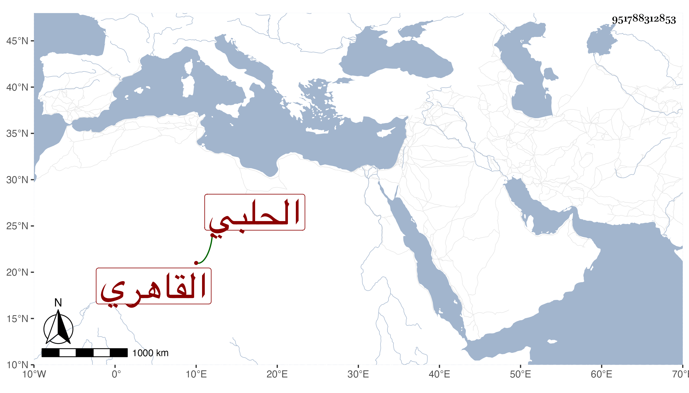

0902Sakhawi.DawLamic.ITO20230111-ara1.EIS1600.951788312853
Biography ID: 951788312853
434
محمد بن محمد بن عمر بن أحمد بن عمر بن يوسف بن علي بن عبد العزيز الرضي أبو العز بن عز الدين الحلبي الأصل القاهري الموقع الماضي أبوه وجده وجد أبيه . ولد في المحرم سنة ست وسبعين وسمع مني المسلسل وقرأ هو علي ثلاثيات البخاري والبردة وسمع من مسلم قطعة ومن الموطأ رواية يحيى بن يحيى ومن السيرة .
